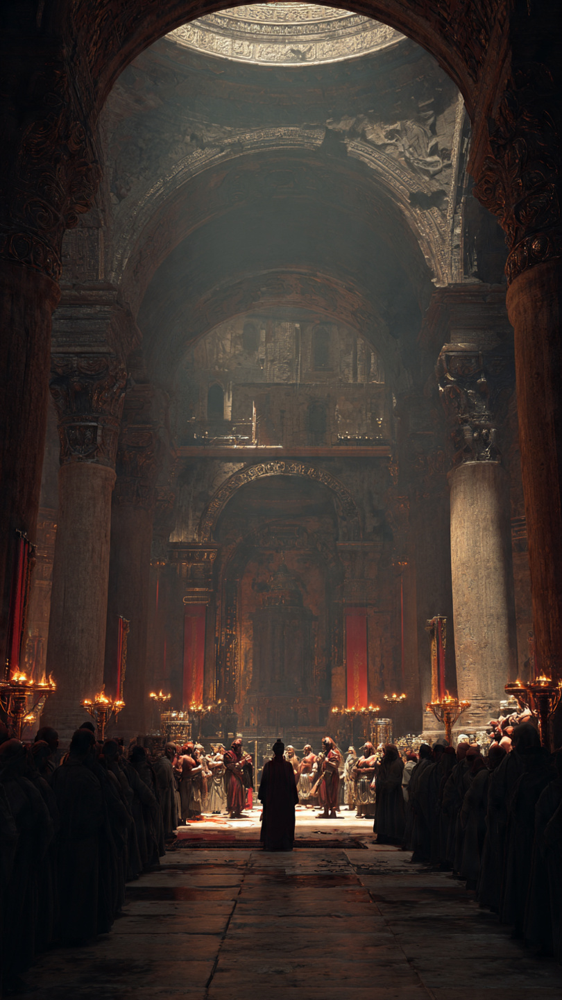
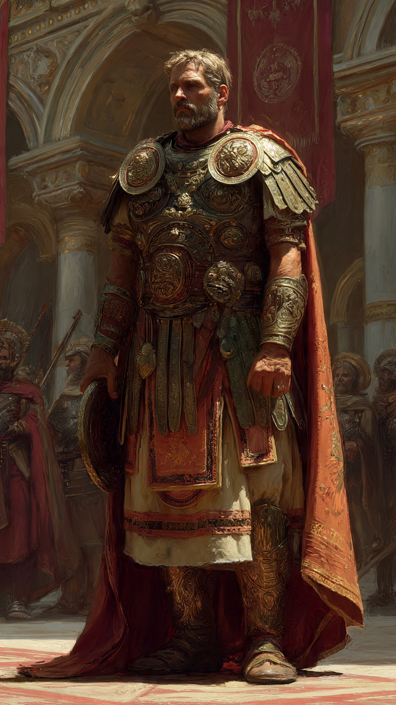

عبد الله بن حذافة السهمي.. الصحابي الذي تحدى ملك الروم
في زمن النبي ﷺ، عاش صحابي عُرف بالشجاعة وقوة الإيمان.
كان اسمه عبد الله بن حذافة السهمي.
كان عبد الله من الصحابة الذين امتلكوا شخصية قوية، وكان لا يخاف في الحق من أحد.
عرفه المسلمون بالثبات والجرأة، فقد كان قلبه متعلقًا بالله أكثر من تعلقه بقوة البشر.
وفي عهد الخليفة عمر بن الخطاب رضي الله عنه، خرج المسلمون في فتوحات كثيرة، وكان عبد الله من الذين شاركوا في بعض تلك الأحداث.
وفي إحدى المعارك، وقع عبد الله بن حذافة أسيرًا عند الروم.
وكان الأسر موقفًا صعبًا، فقد وجد نفسه بعيدًا عن جيشه وبين قوم يختلفون عنه في الدين.
أُخذ عبد الله إلى ملك الروم، وكان الملك يريد أن يستغل شجاعته ومكانته.
نظر إليه الملك وقال له إنه سيعطيه مكانة عظيمة وأموالًا كثيرة إذا ترك الإسلام.
لكن عبد الله لم يتردد.
فقد كان يعلم أن ما عند الله أعظم من كل ما يمكن أن يقدمه البشر.
رفض العرض بكل ثبات، وأظهر أن الإيمان لا يُشترى بالمال ولا بالمناصب.
تعجب الملك من قوة موقفه.
فقد كان يتوقع أن يخاف الأسير أو يبحث عن النجاة بأي طريقة.
لكن عبد الله كان يرى أن النجاة الحقيقية هي الثبات على الحق.
📷 الصورة رقم 1

أدرك ملك الروم أن عبد الله بن حذافة ليس شخصًا عاديًا.
فقد رأى أمامه رجلًا لا يهتز أمام التهديدات ولا يغريه المال أو الجاه.
حاول الملك مرة أخرى أن يؤثر عليه، فوعده بالمزيد من العطايا والمكانة العالية.
لكن عبد الله بقي ثابتًا على موقفه.
قال له بمعنى كلامه:
إن كل ما تملكه من ملك وسلطان لا يساوي شيئًا أمام الإيمان الذي في قلبي.
تعجب الملك من هذا الثبات، وقال لمن حوله:
"كيف يستطيع هذا الرجل أن يرفض كل هذا من أجل عقيدته؟"
كان عبد الله يعلم أن الإنسان قد يفقد أشياء كثيرة في الدنيا، لكن لا ينبغي أن يفقد ما يؤمن به.
وبعد أن فشل الملك في إغرائه، حاول أن يختبر شجاعته بطرق أخرى.
لكنه وجد أن عبد الله لا يخاف إلا الله.
كان موقفه رسالة واضحة:
أن القوة ليست فقط في السيف أو الجيش...
بل في القلب الذي يثبت عندما يواجه أصعب الظروف.
ومع مرور الوقت، بدأ الملك يحترم شجاعة هذا الأسير.
فقد رأى فيه شيئًا نادرًا:
رجلًا يملك قناعة أقوى من الخوف.
وفي النهاية، اضطر الملك إلى إطلاق سراحه، بعد أن أدرك أنه لن يستطيع تغيير ما في قلبه.
عاد عبد الله إلى المسلمين، حاملًا قصة أصبحت مثالًا في الثبات والشجاعة.
📷 الصورة رقم 2

عاد عبد الله بن حذافة السهمي إلى المسلمين، وانتشر خبر موقفه الشجاع بين الناس.
فقد أصبحت قصته مثالًا على قوة الإيمان والثبات عند الشدائد.
عندما وصل خبره إلى عمر بن الخطاب رضي الله عنه، أعجب بشجاعته وثباته.
فقد كان الصحابة يعرفون أن القوة الحقيقية ليست في عدم مواجهة الصعوبات...
بل في الصبر والثبات أثناء مواجهتها.
لم يكن عبد الله يبحث عن الشهرة أو المدح.
كان همه أن يحافظ على ما يؤمن به، وأن يكون صادقًا مع الله.
وهكذا بقي اسمه في التاريخ كأحد الصحابة الذين أظهروا أن الإيمان يمنح الإنسان قوة لا تُرى بالعين.
تعلمنا قصته أن الإنسان قد يجد نفسه في مواقف صعبة، لكنه يستطيع تجاوزها عندما يكون لديه يقين وصبر.
كما تعلمنا أن الدنيا مهما قدمت من مغريات، فإن المبادئ والقيم أغلى من أي شيء مؤقت.
فعبد الله بن حذافة لم يكن يملك جيشًا كبيرًا في تلك اللحظة...
لكنه كان يملك قلبًا قويًا لا ينكسر.
وبقي موقفه شاهدًا عبر الزمن على أن الشجاعة الحقيقية هي شجاعة القلب قبل شجاعة القوة.
👑📖 انتهت القصة 📖👑
العبرة:
من تمسك بالحق وثبت عليه، جعل الله له قوة وهيبة حتى أمام أصحاب السلطان والقوة.